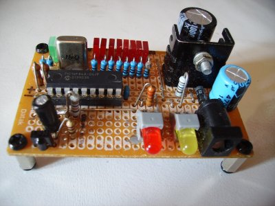
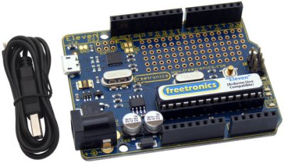
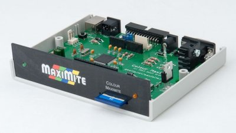
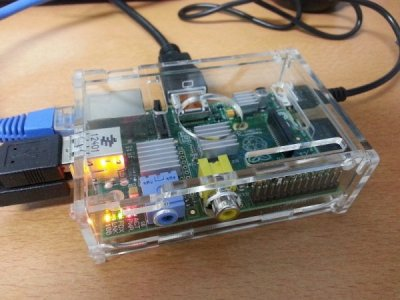
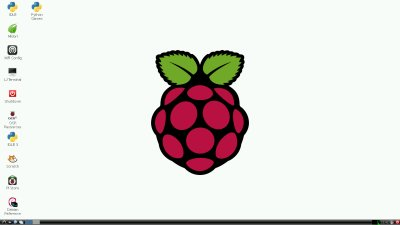

Worthington's Workshop
Computers - Microcontrollers and Microcomputers
|
|
A microcontroller is a programmable microchip capable of replacing a group of discrete logic devices. The classic version of this would be the PIC micro, which has an externally programmable EEPROM to store a program which determines the functionality of the chip. They contain a CPU, memory and an internal logic set by the operation of the loaded program to create a simple computer operation. Microcontrollers are programmed in Assembly Language and typically have no extra Input/Output capability and limited memory, making them useful for simple machine control operations. A typical application would be the pressbutton windows in a car. One significant detail is the inability to use an operating system or operating language. However, as microcontrollers have developed, the later versions are bigger and sophisticated enough to handle an operating system, and the system then becomes a Microcomputer. Microcomputers A microcomputer contains at its heart a microcomputer CPU chip and extra chips for Input/Output management (ie keyboard and display). The later versions have this contained in the one chip, making for a Single Chip Micro. They typically emulate most of the functions of a desktop PC and use an operating system, such as Extended Basic, Linux or Unix. Microcomputers are programmed in a high level computer language such as Basic, C or Python. The classic microcomputer was the venerable Commodore 64 of decades ago. New microcomputers seek to emulate the C=64 experience, as the opportunity for kids to hack a computer disappeared with the advent of the family Windows PC. The new micros have a mission to teach programming skills and enable creation of individual software and hardware projects, until now almost a dying art. Working with Micros The two microcontrollers featured (PIC chip and the Arduino) are useful for logic development, such as the replacement for logic arrays made from discrete logic chips. The microcomputers (Micromite and Raspberry Pi) are capable of mounting an operating system and take computing to a new level. I found the Micromite running RetroBSD Unix to be an interesting challenge as I spend substantial time playing with the setup. It is a great way to learn Unix (and Linux) system calls via the command line shell. With the Micromite running the regular MMBasic a replacement can be found for the venerable Commodore 64 running games or self developed software. The Raspberry Pi takes on the function of a simplified version of a desktop PC as it has the performance of a Pentium II CPU with a modern OS and software. It would see great usage as an educational machine or a second family PC.  The PIC Infrared Receiver Project Overview Microchip Technology, an American company, developed a family of Harvard architecture microcontrollers derived from General Instrument's PIC1650 Peripheral Interface Controller. Microchip PICs have developed a following due to cost, availability, a large hobby and professional user base, extensive application notes, free/low cost development tools and simplified programming systems. The PIC was upgraded with internal EPROM to produce a programmable controller. In 1993, the 16C84 PIC was introduced with an electrically erasable EEPROM memory, enabling reduced pricing from the quartz windowed EPROM PICs. PICs are now available with flash program memory from 256 to 64k words and on-board peripherals. Specifications A PIC 8 bit micro is bought as a single chip for under $10.00, requiring self assembly onto a suitable printed circuit board. Typical models used would be the 16F84A and the 16F628A. Specifications: PIC 16F84A - 1K Program Memory, 68 bytes Data Memory, 64 bytes EEPROM, 1 timer, external clock to 20MHz. PIC 16F628A - 2K Program Memory, 224 bytes Data Memory, 128 bytes EEPROM, 3 timers, hardware PWM, Onboard 4 MHz/37 kHz RC oscillator. Support Microchip provide a complete development system for the PIC microchips, known as the MPLAB X Integrated Development Environment (IDE), running under Java so that it is compatible with Windows, Mac OS-X and Linux/Unix. It is free and contains an Editor, Assembler, Makefile and C Compilers. The C Compilers are available as a stand alone package. Most PIC development is done in Assembler. Some books recommend using a Basic compiler priced at $100-$150. This is far too expensive and is not required. Linux Resources MPLAB X IDE Download: MPLAB Download IDE Geany: Geany Homepage This fast and lightweight IDE is available in Linux/Unix repositories. Assembler gpasm: gputils Homepage This Assembler is part of the gputils package and is available in Linux/Unix repositories. Manual: gpasm Manual It integrates into the Geany IDE when set as the Assembler under [Build/Set Build Commands/]. C Compiler sdcc: Small Devices C Compiler Homepage Also integrates into Geany as the Compiler. I use Geany and gpasm under Ubuntu Linux, which is lightweight, fast and easy to understand. Windows Resources MPLAB X IDE Download: MPLAB Download MPLAB X Manual Download: MPLAB Manual Download (PDF) C Compiler Download: C Compiler Download Programmers Please Note: Current programmers are only available under DOS or Windows operating systems: PIC Programmer RS-232 port: Velleman K8048 kit PIC Programmer RS-232 port: Silicon Chip, May 2008 PIC Programmer DIY kits: Silicon Chip, April 2003 PIC Programmers USB port: Kits'R'Us I use the Velleman K8048 under Windows XP and the older Kits'R'Us K81v4.2 programmer to great effect under DOS. Software installation The program is written in Assembler or C on a Windows PC under the MPLAB X IDE, or my preference of the Geany editor and gpasm under Linux. The editor/assembler converts the program to machine code .hex file. Using a Windows or DOS PC, the .hex file is written to the internal memory using a PIC programmer via the Serial port (Velleman K8048), Parallel port (Kits'R'Us K81) or the USB port. The chip is then extracted from the programmer and inserted into the project PCB, where it will start immediately on power up. There is no external memory used. Books Programming and Customising the PIC Microcontroller, McGraw Hill, Mike Predko *** Highly Recommended *** The PIC Microcontroller - Your Personal Introductory Course, Newnes, John Morton *** Highly Recommended *** 123 PIC Microcontroller Experiments for the Evil Genius, TAB Electronics, Mike Predko All books are available at The Book Depository, UK Links PIC Tutorial: Drexel PIC Tutorial PIC Tutorial: Hobby Projects PIC Tutorial PIC Programming in Linux: Micah Carrick PIC Programming in Linux: PikLab PIC Projects: Best Microcontroller Projects.com PIC Simulator in Linux: ShareMe.com My PIC project PIC Project: Silicon Chip 10 channel IR Receiver I had to do some corrections to the source file 10-RMOTE.ASM to get it to assemble under gpasm. The capitalisation of constants and variables changed in the text. Conversion of all to to upper case solved this and allowed assembly with the same output as the 10-RMOTE.HEX file. My project was built on a smaller Jaycar PCB and did not use relays. The remote sender was set to 'Satellite 2' to make the receiver work. I found power supplies with ripple caused the unit to malfunction. Use of a regulated power supply or batteries alleviated this. A picture of this unit is found above.  The Freetronics Eleven Arduino Microcontroller Overview To quote the Arduino Home Page: The Arduino microcontroller is an open-source electronics prototyping platform based on flexible, easy-to-use hardware and software. It's intended for artists, designers, hobbyists and anyone interested in creating interactive objects or environments. It was developed in Italy as a means of cheap hardware and software development and now has a huge international support community. Hardware Jaycar sell the Australian made Freetronics Arduino compatible range: 1. Arduino 11 based on the Arduino Uno 2. USB Droid for Android development 3. EtherTen for LAN connection 4. EtherMega for extra I/O 5. Leostick mini USB stick version 6. ATMEGA328P chip incl. Uno Bootloader 7. Arduino Prototyping Shield Altronics sell a small selection of the original Italian made Arduinos: 1. Arduino Uno R3 2. Arduino Mega 2560 R3 3. Arduino Ethernet Shield R3 4. Sparkfun FTDI USB to Serial Element 14 (Farnell) sell the original Italian made Arduinos, with an interesting mini version: 1. Element 14 2. Arduino Nano RS Components sell the original Italian made Arduinos: 1. RS Components 2. RS Components Arduino All versions except for the EtherMega and the Mega 2560 are well under AUS$100. All are now based on the ATmega328 chip. The boards are complete and operational from the start. They are preinstalled with a small program to flash an onboard LED. For further development a range of plug in Shields (circuit boards) carry various interface components and unpopulated free development areas. Specifications All Arduinos have at a minimum the ATMEL ATMega328P chip as the CPU. Specifications: CPU: 8 bit AVR, FPU: No, MPU/MMU: No/No, Freq: 20MHz, Operating Voltage (Vcc): 1.8 to 5.5, Temp: -40C +85C, Memory - Flash: 32k bytes, SRAM: 2k bytes, EEPROM: 1024 bytes, DRAM: No, Self Program Memory: Yes, Pin Count: 32, I/O pins: 23, Ext Interrupts: 24, SPI: 2, TWI (I2C): 1, UART: 1, Timers: 3, NAND Interface: No, ADC - channels: 8, Resolution: 10 bits, Speed: 15 ksps, Analog Comparators: 1, PWM Channels: 6, 32kHz RTC: Yes, I2S: No Output Compare channels: 6, Input Capture Channels: 1, Calibrated RC Oscillator: Yes, Debug Interface: debugWIRE External Bus: No, CAN: No, LIN: No, Ethernet: No, Temp Sensor: Yes, Watchdog Timer: Yes, RTC: Counter, picoPower: Yes. Details of the CPU: ATMEL ATMega328P Software Arduino provides a complete IDE for the Arduino with versions for Linux, Unix, Mac OS-X and Windows. It is free and contains an Editor and a Compiler for the Arduino Programming Language, a simplified version of C based on Wiring which is a cross platform control environment for attaching devices to microcontrollers. All that is required is the installation of the Arduino IDE into a PC. The Linux/Unix versions are available from the system Repositories. The IDE compiles and downloads the program directly to the Arduino via the USB port for immediate execution. Links Arduino: Arduino Home Page Arduino Software: Arduino IDE Download Arduino Get Started: Arduino Guide Arduino Questions: Arduino FAQ Arduino Support: Arduino Playground Arduino Background: Arduino on Wikipedia Many Arduino projects can be found on the net by Googling 'Arduino Projects'. My Arduino Projects A Prototyping Shield was wired with an array of 10 LEDs as outputs plus four switches and two potentiomenters as inputs. It was extremely easy to modify an available sketch (C source file) to get the LEDs flashing in sequence plus reading the switch settings and have the voltages on the potentiomenters read by the ADC. Another experiment was to mount an Arduino Nano on a small Jaycar PCB and install the software from the Arduino IDE using a SparkFun FTDI Basic Breakout USB to Serial converter. The Arduino Nano is suitable as an embedded controller and is about the size of a large postage stamp.  The Maximite Colour Microcomputer The Maximite Microcomputer Australian Geoff Graham designed the original monochrome microcomputer and described it in the March, April and May 2011 issues of Silicon Chip magazine. The Colour Maximite was described in the September and October 2012 issues and the MiniMaximite in the November 2011 issue. They use a PS/2 keyboard, 480x432 pixel VGA or 304x216 pixel Composite Monitor, a USB 2.0 port for downloading updates, Audio up to 5khz and an external plug pack for power. An SD memory card is used for external storage of programs written under the preinstalled MMBasic interpreter. The 20 digital/analogue Input/Ouput pins are available on a rear socket. The Colour Maximite also has an extra Arduino style pinout to accept the Arduino shields. Hardware Jaycar sell the Mini-Maximite: Mini-Maximite Monochrome Altronics sell the three versions: Maximite Monochrome, Maximite Colour, Mini-Maximite Monochrome All versions are well under AUS$100. The kits are quite easy to build as the surface mount components are already mounted. The Mono take 1.5 hours, The Colour takes 2.0 hours and the Mini only takes 15 minutes. A Maximite Monochrome computer would be the easiest at getting a system up and running. Being a minimalist and do-it-yourself enthusiast, I did all the development on the MiniMaximite and had a lot of fun. NB: The MiniMaximite requires a separate 3.3volt regulated supply to operate, unlike other versions with on board supplies. To reduce the 5 volts from the USB input, my home made MiniMaximite support board contains a 3.3volt regulated supply. The LM3940 regulator is available as a 3 lead IC from Jaycar, set up as per an LM7805 pinout and circuit. LM3940 3.3V Regulator Operating Systems Basic: A very useful version of MMBasic is pre installed on the chip. Basic is available from from the Geoff Graham Maximite website and can be simply bootloaded for updating or reinstallation. Basic is the best language for usage as a controller. MMBasic is rich with commands to utilise the output ports and is easy to use. Unix: Russian Serge Vakulenko wrote the code for the implementation of Micros v2.11 for the PIC-32 microcontrollers. On this website is a complete project based on this operating system: Micros Project Software installation Be sure to have a look at the Micros Project page to see the programming setup and processes involved for both Unix and Basic. Either operating system is written to the internal memory via the USB port from a PC. The SD card is formatted to accept program files. Basic only requires a blank, formatted SD card whilst Micros requires program files to be added. Links General Support: The Maximite Story Interview with Geoff Graham: Alexander Demin website Original monochrome Maximite: The Monochrome Maximite New Colour Maximite: The Colour Maximite Monochrome MiniMaximite: The Mini Maximite Maximite MM Basic: Maximite Basic Home Page Maximite MM Basic Manual: Maximite Basic Manual Download My Maximite Project Micros Unix: Micros Project I used a Minimaximite plugged into a home made support board. The board basically supplied 3.3 volt power to the CPU with all the I/O handled via the USB port via PuTTY, a SSH terminal program connecting a PC as a dumb terminal. A Mono or Colour Maximite will perform exactly the same functions.  The Raspberry Pi Microcomputer The Raspberry Pi Microcomputer The Raspberry Pi foundation of the UK created the Raspberry Pi credit card sized single board computer (SBC) to promote computer science education in schools. It has a Broadcom BCM2835 System on a Chip (SoC), which includes a 700MHz ARM processor, VideoCore IV GPU, and has now been upgraded to 512 MBytes of RAM from the previous 256 MBytes. An SD card is used for for booting and storage. The Foundation provides Debian and Arch Linux ARM distributions. Python is the main programming language, with support for BBC BASIC (via RISC OS or the Brandy Basic clone for Linux), C, Java and Perl. Hardware Element 14 (Farnell): 1. Element 14 2. Raspberry Pi RS Components: 1. RS Components 2. Raspberry Pi Specifications System on Chip: Broadcom BCM2835 (CPU, GPU, DSP, and SDRAM), CPU: 700 MHz ARM1176JZF-S core (ARM11 family), GPU: Broadcom VideoCore IV, OpenGL ES 2.0, 1080p30 h.264/MPEG-4 AVC high-profile decoder, SDRAM: 512 Mbytes, Video outputs: Composite RCA & HDMI, Audio out: 3.5 mm jack, HDMI, Onboard storage: SD, MMC, SDIO card slot, Ethernet: 10/100 RJ45 onboard network. Details of the CPU: ATMEL ATMega328P Operating Systems The Raspberry Pi uses Linux operating systems with the OS image pre loaded onto the SD card to boot the CPU. The Foundation created the New Out Of Box System (NOOBS) installer for several Linux distributions, with a preference for Raspbian derived from the ARM hard-float (armhf) version of Debian 7 'Wheezy' Linux. It uses an LXDE desktop optimized for the ARMv6 instruction set of the Raspberry Pi. Have a look at the Micros Project page to see how to install the Linux OS onto the SD card. NOOBS makes the following distros available for installation: Archlinux ARM, OpenELEC, Pidora (Fedora Remix), Raspbmc (a controller for X-Box video), Raspbian (recommended), RISC OS (a version of the original BBC micro OS). A FAT32 formatted 4GB SD card is the recommended minimum storage requirement for the Operating System, languages and any created documents. Software The Foundation intends to create an application store for program downloads. I would expect the Pi Store to have thousands of the programs available under the Debian system. Raspian comes pre installed with The Midori Internet Browser, Python 3 language, The Python development environment IDLE, Scratch - a graphic based programming language and LXterminal program. Debian preferences adjust the setup for the OS, the Pi Store is a resource for free software and the WiFi setup connects the computer to a wireless network. Links Raspberry Pi: Raspberry Pi Home Page Raspberry Pi OS Software: Raspberry Pi Downloads Raspberry Pi Raspbian: Raspbian Home Page Raspberry Pi Get Started: Raspberry Pi Guide Raspberry Pi Resources: Raspberry Pi Design Spark Raspberry Pi Videos: Raspberry Pi on You Tube Raspberry Pi Background: Raspberry Pi on Wikipedia Many Raspberry Pi projects can be found on the net by Googling 'Raspberry Pi Projects'. My Raspberry Pi Project  Raspberry Pi running Raspbian
I originally used the Raspberry Pi as a video controller for the X Box video system by installing RaspBMC. After fiddling around
for a few hours I reverted to the Raspbian distro which emulates my bigger Linux Boxes. Due to familiarity with Ubuntu linux, also
a Debian derivative, I had no trouble with the system. The LXDE desktop is easy to use and becomes second nature.
|